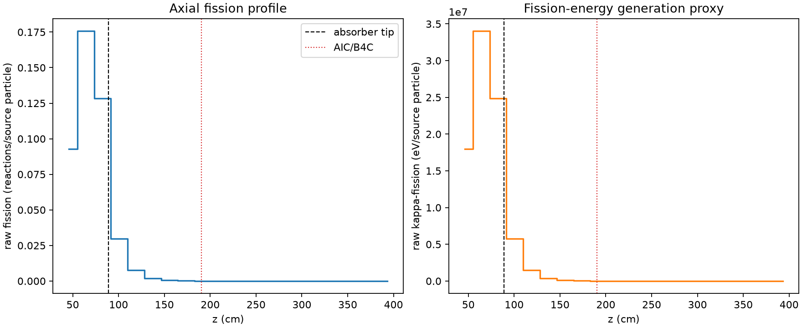
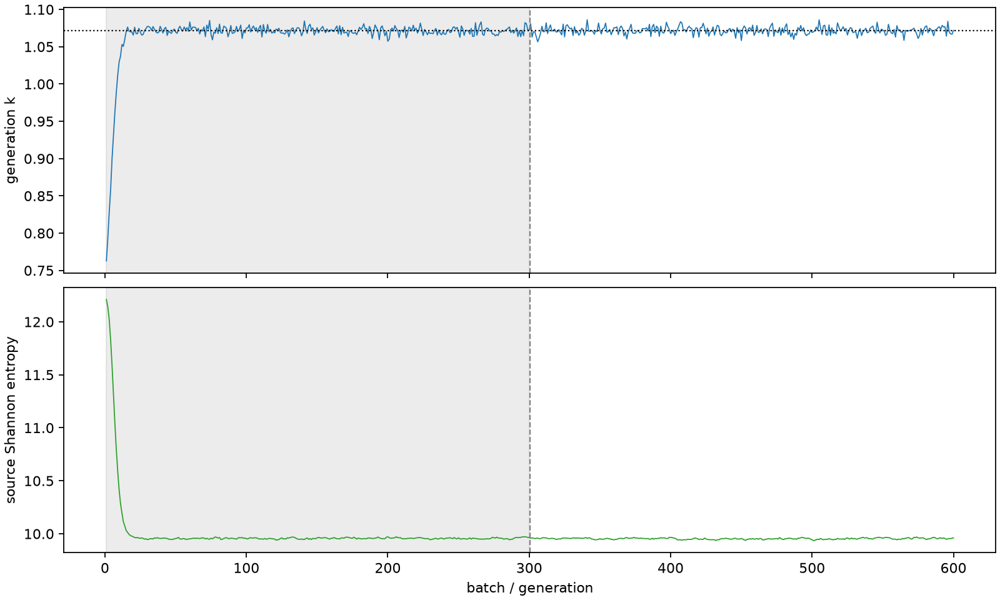

| field | value |
|---|---|
| experiment | V2-STAGE_128_OGRENCI_02-0018 |
| k | 1.071753579234719 |
| MC standard error | 0.00020055607876606234 |
| seconds | 997.2677438499995 |
| acceptance | not_assessed |
| convergence | review_required |
Completed is output integrity only; physical and statistical review required. Zero tallies do not prove zero production or zero uncertainty.
| diagnostic | value |
|---|---|
| geometric fuel voxels | 5280 |
| zero fission tally voxels | 2057 |
| low signal fuel voxels | 3132 |
| low signal fission share | 9.688929228360623e-05 |
| low signal kappa share | 9.693648442119331e-05 |
| important fission share | 0.9502284161776664 |
| previous filter included | 2148 |
| duration estimate s | 1562.5173488400023 |
| actual minus estimate s | -565.2496049900028 |
| fission relative MC error | statistics |
|---|---|
| all_geometric_fuel | {"voxels": 5280, "positive_mean_voxels": 3223, "zero_mean_voxels": 2057, "undefined_relative_error_voxels": 2057, "median": 0.057173636069459036, "p95": 0.9999999999999999, "maximum": 1.0000000000000002} |
| low_signal | {"voxels": 3132, "positive_mean_voxels": 1075, "zero_mean_voxels": 2057, "undefined_relative_error_voxels": 2057, "median": 0.5689678856739986, "p95": 1.0, "maximum": 1.0000000000000002} |
| important_95pct | {"voxels": 941, "positive_mean_voxels": 941, "zero_mean_voxels": 0, "undefined_relative_error_voxels": 0, "median": 0.004424408633772365, "p95": 0.00852146605998161, "maximum": 0.009483042248988003} |
| outside_previous_filter | {"voxels": 3132, "positive_mean_voxels": 1075, "zero_mean_voxels": 2057, "undefined_relative_error_voxels": 2057, "median": 0.5689678856739986, "p95": 1.0, "maximum": 1.0000000000000002} |
| kappa_fission relative MC error | statistics |
|---|---|
| all_geometric_fuel | {"voxels": 5280, "positive_mean_voxels": 3223, "zero_mean_voxels": 2057, "undefined_relative_error_voxels": 2057, "median": 0.05707802511152572, "p95": 0.9999999999999998, "maximum": 1.0000000000000002} |
| low_signal | {"voxels": 3132, "positive_mean_voxels": 1075, "zero_mean_voxels": 2057, "undefined_relative_error_voxels": 2057, "median": 0.5682086527838721, "p95": 1.0, "maximum": 1.0000000000000002} |
| important_95pct | {"voxels": 941, "positive_mean_voxels": 941, "zero_mean_voxels": 0, "undefined_relative_error_voxels": 0, "median": 0.004419547764812494, "p95": 0.008510571135854067, "maximum": 0.009470913995339945} |
| outside_previous_filter | {"voxels": 3132, "positive_mean_voxels": 1075, "zero_mean_voxels": 2057, "undefined_relative_error_voxels": 2057, "median": 0.5682086527838721, "p95": 1.0, "maximum": 1.0000000000000002} |
| axial bin | fission share | kappa-fission share |
|---|---|---|
| 1 | 0.2122938306602333 | 0.21229203549037867 |
| 2 | 0.4016682351186912 | 0.40164371147470346 |
| 3 | 0.29378394764954463 | 0.2937764801422192 |
| 4 | 0.06836995466889699 | 0.06839431166346241 |
| 5 | 0.01758831928441803 | 0.01759520616023604 |
| 6 | 0.004662300352836054 | 0.004664125180641696 |
| 7 | 0.0012073200879127504 | 0.0012078488862841492 |
| 8 | 0.0003167023239926232 | 0.0003168388448363143 |
| 9 | 8.358076417673611e-05 | 8.362052556785065e-05 |
| 10 | 1.9353809764582393e-05 | 1.9364213015461105e-05 |
| 11 | 5.2760151827001195e-06 | 5.2774808955703815e-06 |
| 12 | 1.0260771133363493e-06 | 1.0263361814960457e-06 |
| 13 | 1.428447138580106e-07 | 1.432729256823718e-07 |
| 14 | 1.0342523161549883e-08 | 1.0328651993360894e-08 |
| 15 | 0.0 | 0.0 |
| 16 | 0.0 | 0.0 |
| 17 | 0.0 | 0.0 |
| 18 | 0.0 | 0.0 |
| 19 | 0.0 | 0.0 |
| 20 | 0.0 | 0.0 |
Histories include the inactive-to-active transition at batch 300. kappa-fission approximates fission energy production, not total heat deposition.

